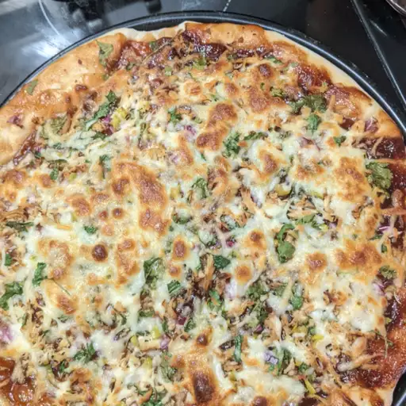

Barbeque chicken pizza

Description
One of the best pizzas out there.
Try this one when you get tired of tomato sauce.
Ingredients
- 1(12 inch) pre backed pizza crust
- 1 cup spicy barbaque sauce
- 2 skinless boneless checken breast halves, cooked and cubed
- 1 cup sliced pepperoncini peppers
- 1 cup chopped red onion
- 1/2 cup chopped fresh cilantro
- 2 cups shredded Colby-Jack cheese
Steps
- Preheat the oven to 350 degrees F (175 degrees C).
- Place pizza crust on a baking sheet. Spread barbaque sauce on crust. Top with chicken, pepperoncini peppers, onion and cilantro. Cover with Colby-Jack cheese.
- Bake in the preheated oven until cheese is melted and bubbly, about 15 minutes.
Back to recipes